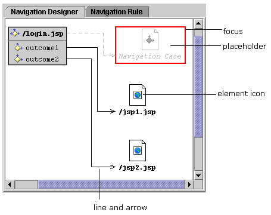

Developing web applications
Web Development is a feature of JBuilder Developer and Enterprise. Applet development is a feature of all editions of JBuilder.
JBuilder provides many tools that make web application development simple:
- Wizards make creating web modules, applets, servlets, JavaServer Pages (JSP), JavaServer Faces (JSF) and Struts-enabled web modules, and JNLP files and Homepages for Java Web Start applications easy.
- Framework and JSP tag library support allows you to easily add support for various frameworks and tag libraries to your web module or JSP.
- Popular frameworks and tag libraries, such as JSF, Struts, JSTL (JavaServer Pages Standard Tag Library), and InternetBeans Express are included with JBuilder.
- Automatic WAR file generation helps you create an archive file for your web module.
- The Archive Builder helps you create JAR files for an applet, a Java Web Start applet, or a Java Web Start application.
- The Web Module DD editor provides a graphical user interface (GUI) for editing the web.xml deployment descriptor file.
- The Faces Config editor provides a visual designer for navigation rules, as well as a form-based editor for editing other elements in the faces-config.xml deployment descriptor file.
- The JSF Flow designer is a visual tool for designing the flow of a JSF application.
- The Struts Config editor provides visual designers for Actions, Form Beans and Tiles elements, as well as a form-based editor for editing other elements in the struts-config.xml deployment descriptor file.
- JSP TagInsight provides lists of available tag library tags, elements, attributes, and entities when editing a JSP.
JSF Navigation designer

For more information, see:
Developing Web Applications: Introduction
Developing Web Applications: Overview of the web application development process
Developing Web Applications: Developing JavaServer Faces web applications
Developing Web Applications: Developing Struts web applications